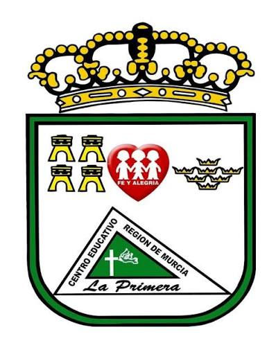

Brindar una formación integral de excelencia a nuestros estudiantes, basada en la práctica de valores cívicos, morales y humanos. Potenciamos el pensamiento crítico, la disciplina voluntaria y el uso responsable de la tecnología para desarrollar ciudadanos comprometidos con el progreso sostenible de su entorno social.
Ser reconocidos como una institución educativa líder y de vanguardia pedagógica a nivel nacional. Proyectamos consolidar una comunidad de aprendizaje inclusiva donde la innovación académica, la responsabilidad social y el desarrollo del talento de cada estudiante aseguren su éxito profesional futuro.